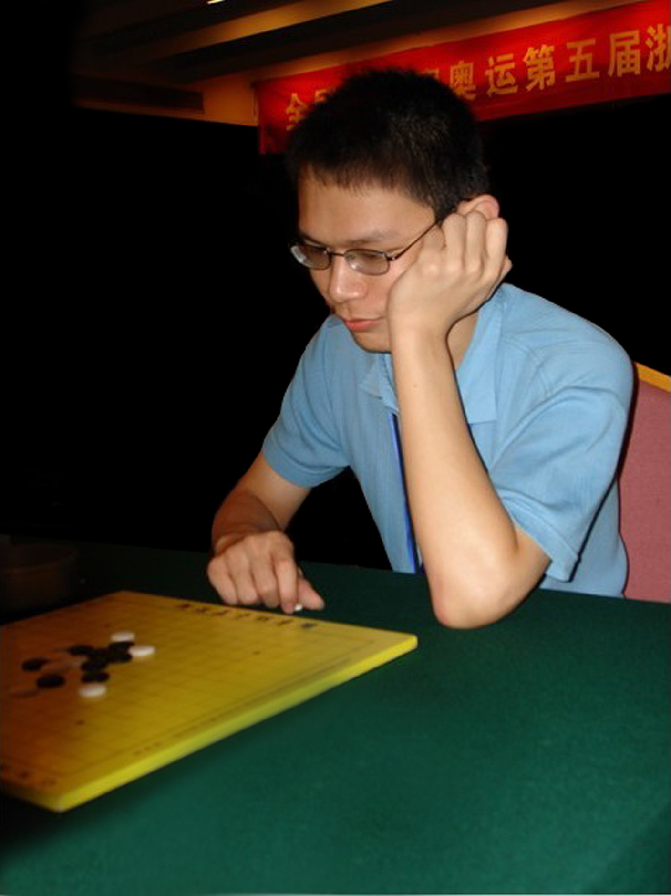
戴晓涵，专业六段，2010全国五子棋等级分排名第一，现居第二；两届全国五子棋公开赛个人冠军，两次代表浙江取得全国五子棋团体赛冠军；曾著有《献给五子棋爱好者》、《补杀技巧简介》、《博弈规则》等诸多作品。《方寸之间》是根据作者多年五子棋实战大赛经验并综合数十位专业棋手的全面技术总集。包含了理论、计算、心理与软件四部分，分六卷，重点介绍五子棋的理论与计算。
内容简介：
第一卷《五林秘籍》介绍了五子棋的基本实用技巧，是五子棋理论中最容易掌握的部分；
第二卷《厚积薄发》介绍了五子棋的计算训练方法与如何分配计算力的技巧；
第三卷《棋思妙想》收录了诸多五子棋观点、思路与理论，是相对松散的内容集合；
第四卷《三位一体》系统整理了目前五子棋的三大理论体系，理解难度最大但也是本书的精髓；
第五卷《兵不厌诈》尽量全面介绍目前五子棋心理战术的概况；
第六卷《软件的主人》简单介绍目前五子棋两款主流软件的基本使用技巧。
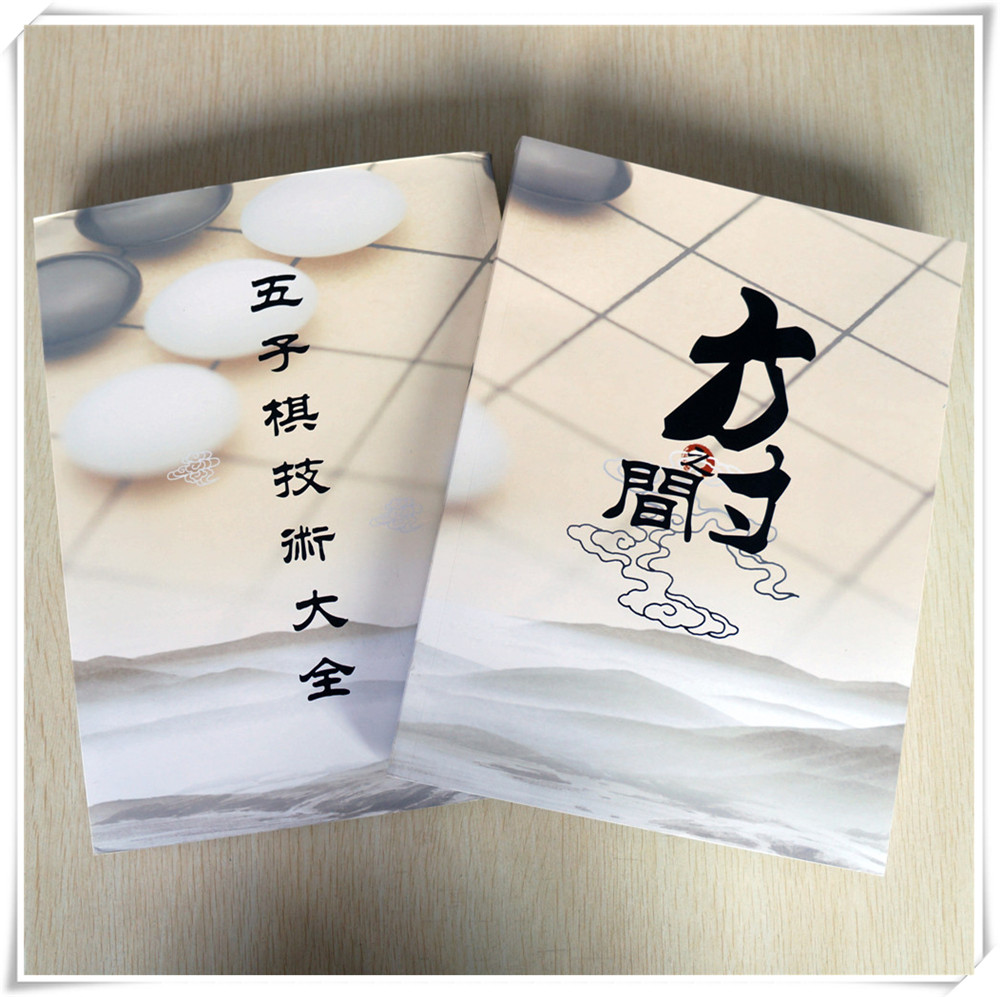
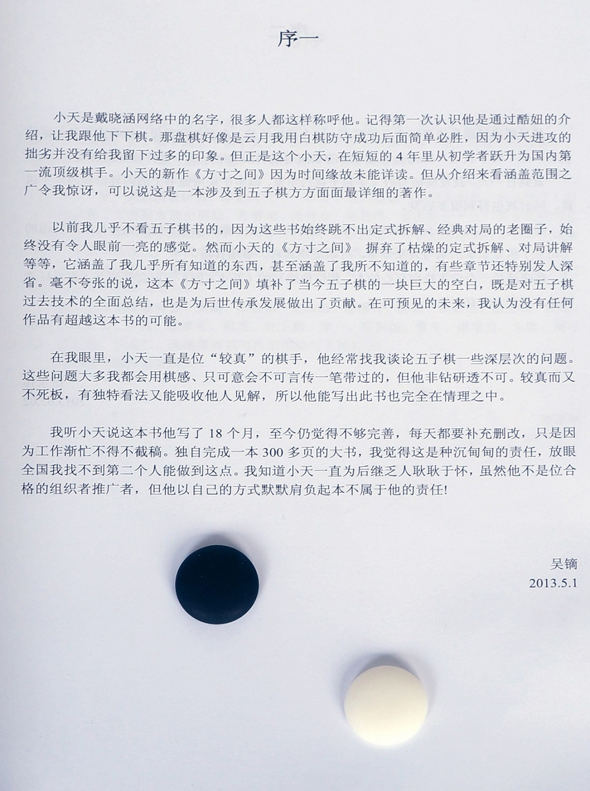
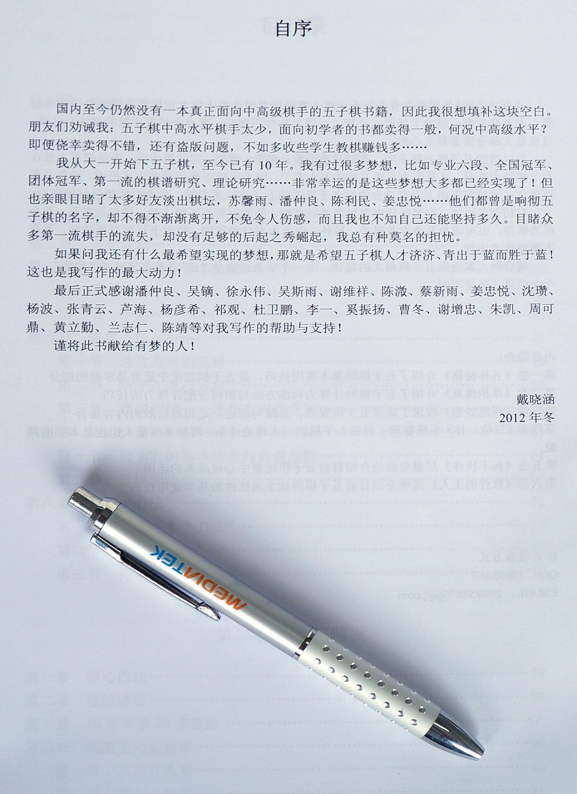
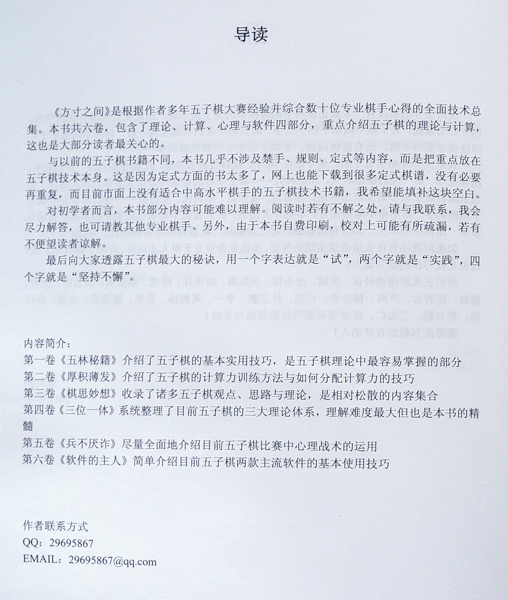
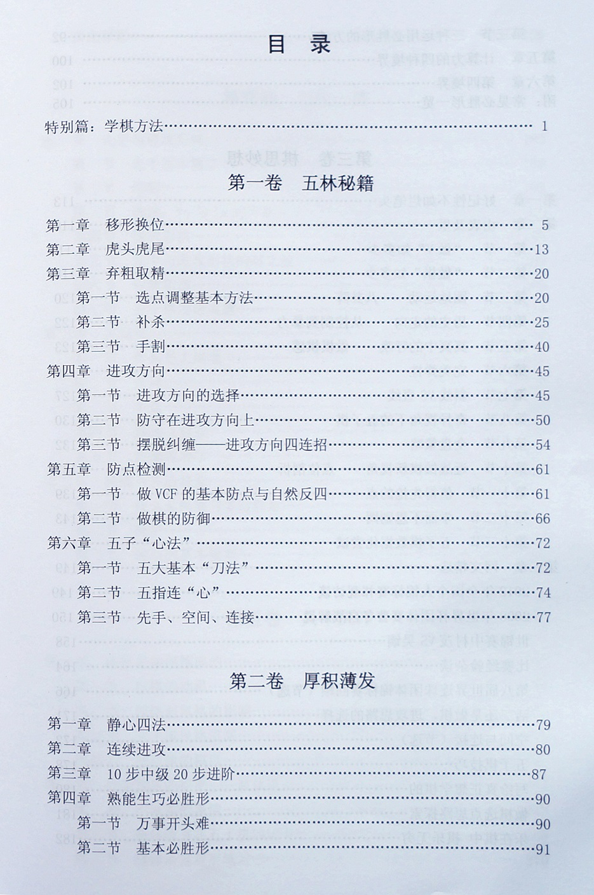
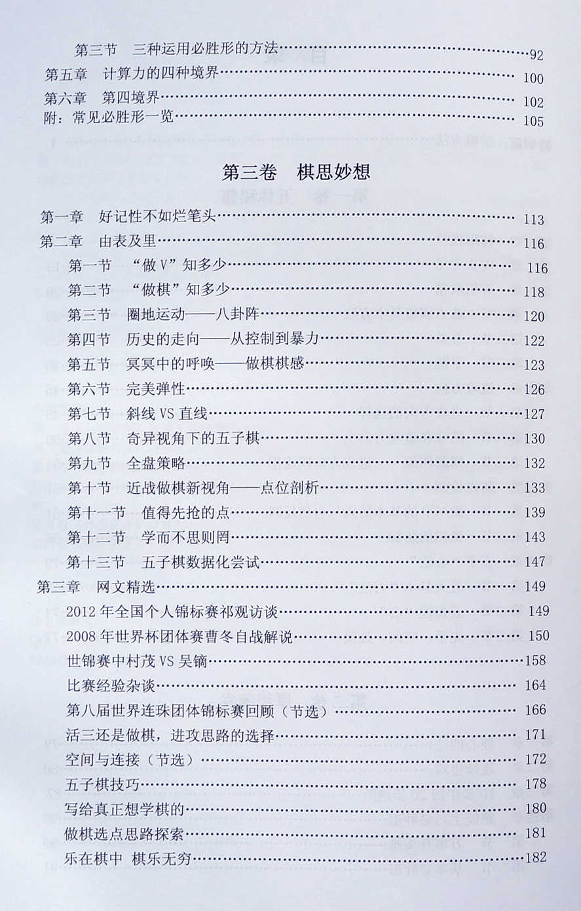
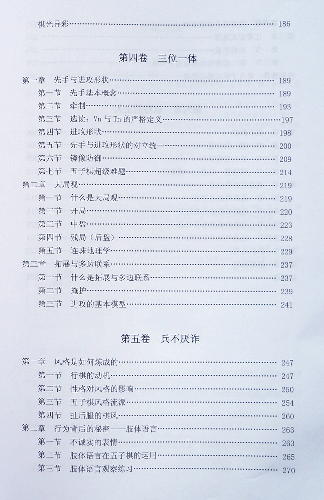
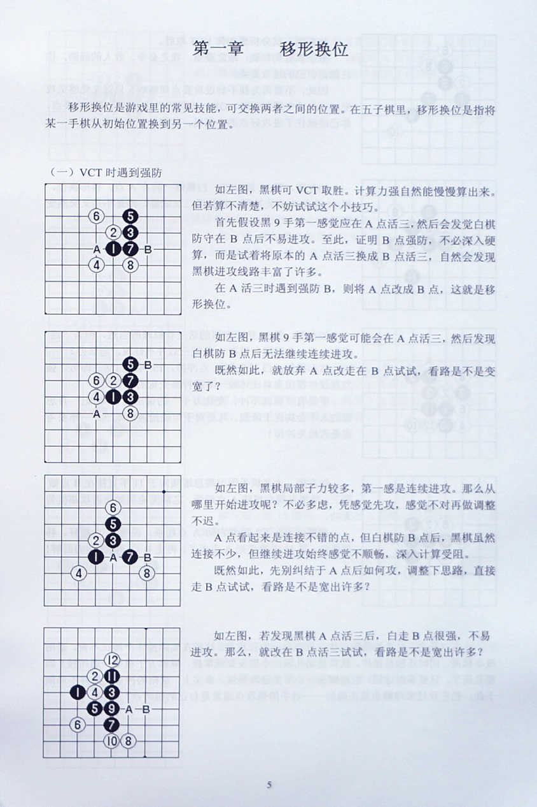
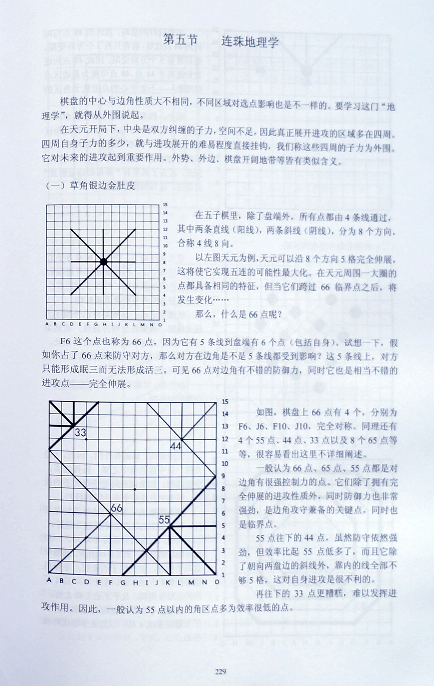
淘宝部分读者书评：
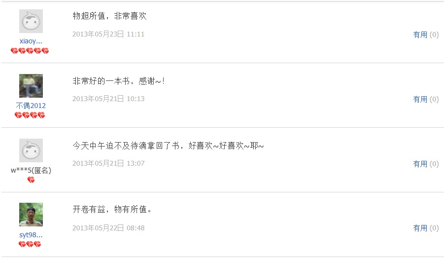
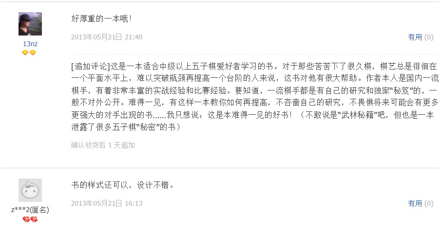
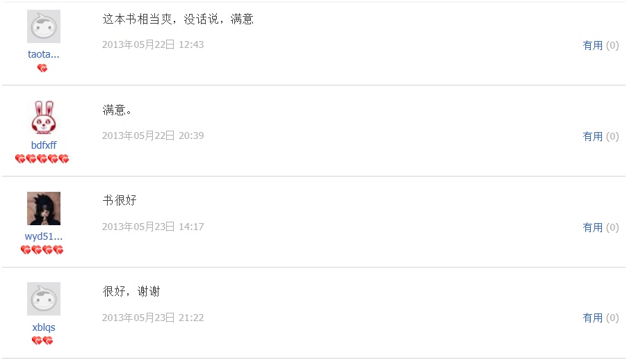
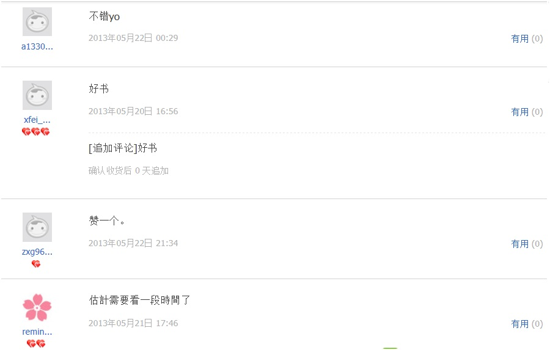
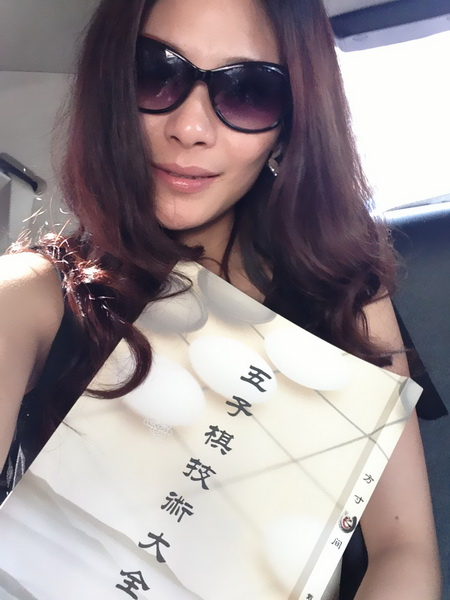
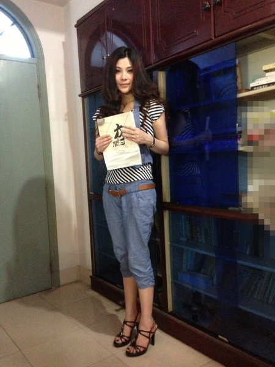
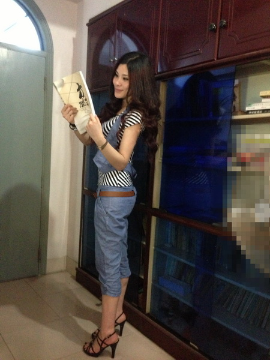
购书详情
全书一共336页，正文328页，A4纸书写，书重0.8公斤/本，限量1000本。
购书方法：冰雪笑醉淘宝http://url.cn/HA39tE，
悟石淘宝;http://url.cn/Gz1dCT。淘宝价75/本不包邮，可凭交易纪录购买棋具享受9折优惠（不含邮费）
购书咨询QQ群：272429149。
［此帖子已被 小丸.net 在 2013-5-27 13:06:56 编辑过］
顶
自费买一本又怎么样。。。。何必要报销。。。。
自费买一本又怎么样。。。。何必要报销。。。。
呃，@位同胞有所不知，我社F是有自己的管理t和\行方式的，平r上UX到社，所以由社箐N一些活拥闹С觥２皇歉恫黄疬@X，而是@是我自己的嗬。就像你I了t保就去箐N一樱我相信你也能自M看病，但是x箐N的。而且作橐消M者，索要l票是有利於So自身利益，同r可以避免偷漏等}，有利於So家利益的。@位同胞可能看}^於位了。
此帖被屏蔽 屏蔽于 2013-5-26 14:15:52并-20金币
1.小天的书是个人自费印刷，根本没有发票。
2.买的人是为了学棋，根本不需要发票。
3.不要扯到为国家纳税这个字眼上，至少，不值得为了一本书这样，我说的自费买一本的意思是，撇开我们的团队，我们自己买一本，当然，如果你的团队能帮你报销一本更好，必竟汗牛充栋一定是好事。
4.社团的权力并不在于交了一些钱而要社团为你做什么，而是你为社团出了多少力，来获得相应的回报。而不是想要“小投入获得大回报”这在这个社会已经不能立足了。就像你想赚10000块钱，你没有5W的投入根本是不可能的。
PS:@如火留年 只是说了当今的事实。。。。为何会遭此毒手。。。。。
［此帖子已被 小丸.net 在 2013-5-26 10:26:06 编辑过］
［ 尕孩 于 2013-5-26 19:24:49 时花20金币送鲜花一朵］
［ 小红眼镜 于 2013-5-26 23:23:27 时花20金币送鲜花一朵］
 可以开啊 百分之十五的税点不就可以了
可以开啊 百分之十五的税点不就可以了1.小天的书是个人自费印刷，根本没有发票。
2.买的人是为了学棋，根本不需要发票。
3.不要扯到为国家纳税这个字眼上，至少，不值得为了一本书这样，我说的自费买一本的意思是，撇开我们的团队，我们自己买一本，当然，如果你的团队能帮你报销一本更好，必竟汗牛充栋一定是好事。
4.社团的权力并不在于交了一些钱而要社团为你做什么，而是你为社团出了多少力，来获得相应的回报。而不是想要“小投入获得大回报”这在这个社会已经不能立足了。就像你想赚10000块钱，你没有5W的投入根本是不可能的。
PS:@如火留年 只是说了当今的事实。。。。为何会遭此毒手。。。。。
［ 屏蔽 于 2013-5-26 19:43:15 时奖励此帖[金币加 100 威望加1］
［ 小红眼镜 于 2013-5-26 23:22:50 时花20金币送鲜花一朵］
［ 冰雪笑醉 于 2013-5-27 0:01:32 时花20金币送鲜花一朵］
［ 冰雪笑醉 于 2013-5-27 0:01:32 时花20金币送鲜花一朵］
［ 冰雪笑醉 于 2013-5-27 0:01:32 时花20金币送鲜花一朵］
［ 冰雪笑醉 于 2013-5-27 0:01:32 时花20金币送鲜花一朵］
［ 冰雪笑醉 于 2013-5-27 0:01:32 时花20金币送鲜花一朵］
［ 珠子 于 2013-5-27 0:40:00 时花20金币送鲜花一朵］
引用：
原文由 如火流年 发表于 2013-5-27 12:18:31 :
呵呵不让说话就不说了呗。说两句真话某党不爱听，某党员把我帖子屏蔽了，呵呵请看一下中华人民共和国宪法第二章第三十五条好么？我是说小天这样印书卖，没有版号，不是正规出版物，真的不一定能去跑税务局，报税，开出票来。而且成本可能会非常高。况且纳税现在真的是义务么？对应的权利在哪里？最后的最后提个建议：淘宝找人代开发票，肯定能报销的，税点自己付现金即可，大约是5%左右。可以商议一下谁付。
这样啊。想这么有水平的书，居然不正规出版，真是知识界的损失。下次哪位再有大作分享给棋迷，我可以帮他联系出版单位！
在哪能买到